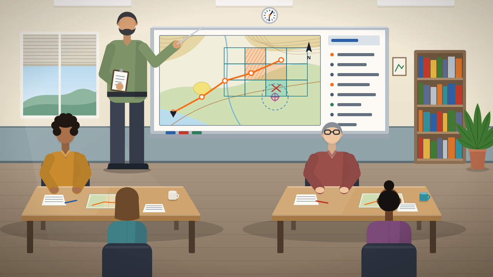
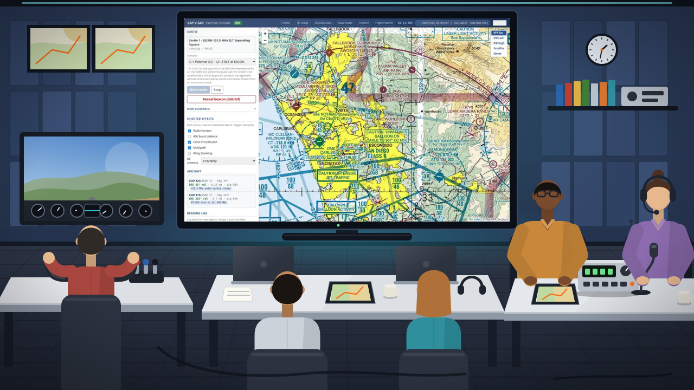

Mission base
An Incident Commander, an Air Operations Branch Director and a Mission Staff Assistant work a live map with aircraft tracks, plotted bearings and tasking.
VIRTUAL SEARCH AND RESCUE · FOR CIVIL AIR PATROL CREWS AND STAFF
CAP-VSAR runs a complete search and rescue exercise, a V-SAREX, on the simulator: a mission base with a staff, a working radio net, aircraft with faithful replicas of the direction-finding gear, ground teams, and a practice beacon that misbehaves the way the real one does. Same seats, same incident, same mistakes — made on a Tuesday night instead of on the day.
Unofficial training tool built by CAP members. Not a CAP program.


ESCON · 121.5 MHz · SIMULATED · NOT A REAL DISTRESS · NOT A NAVIGATION CHART
THE MISSION
An exercise director writes the incident once. Then the wing runs it: command, communications, air and ground, each person in the seat they will hold on the real day.
An Incident Commander, an Air Operations Branch Director and a Mission Staff Assistant work a live map with aircraft tracks, plotted bearings and tasking.
A Mission Radio Operator runs the tactical net on a base radio with a real push-to-talk, a time-out timer and a CAP Form 110 log that fills itself in.
Crews fly a Cessna 182T with the G1000, a Garmin audio panel, a Technisonic tactical radio and a Becker or RHOTHETA direction finder on a Mission Observer station.
An Urban Direction Finding (UDF) team joins the net from a phone, takes the bearing cut from base, and homes on the beacon.
A simulated ELT on 121.5, 243 or 406 MHz that hides behind ridges, drops out in a bank and swings the needle as you pass overhead.
When no pilot can sit at the console, the airplane still flies the pattern, so the observer, the base and the ground team can still train.
INCIDENT COMMAND, SIMULATED
The exercise follows the incident structure CAP staff already know. A base-staff tabletop is a good drill; a base-staff tabletop with live tracks, a working net and bearings that are wrong in realistic ways is a rehearsal.
Runs the base from the Mission Base screen: reads the alert, tasks sorties, watches the cuts come in, and sends the ground team to the intersection.
Builds the search patterns from the Incident Command System (ICS) 204 assignment in the Flight Planner, exports them to the G1000, then watches tracks and bearing cuts on the base map.
Flies the pattern in the Cessna 182T, works a role-played SoCal Approach for the altitude block, or supervises the AI Mission Pilot and the GFC 700.
Runs the right seat: the audio panel, the tactical radio and the direction finder. Calls the bearings, recognizes the cone of confusion, reports ops-normal.
Eyes outside, chart in hand, a second opinion on the bearing geometry.
Not a person: the aircraft's position and DF state feeding the base.
Net control on the tactical VHF-FM net; radio checks, 30-minute ops-normal calls, bearing reports, all logged on the CAP Form 110. MRO 2 keeps the airband watch.
Keeps the status board honest: who has joined, who is on the net, where the cuts cross.
Joins the net from the truck, copies the intersection from base, drives the corridor and homes with the handheld DF to the find.
Writes the scenario, places the beacon, injects the signal effects mid-sortie, and reveals the truth at debrief.
Watches, then uses the Debrief screen's scores (closest approach, bearing error, first good cut, track efficiency) to sign off log discipline and Specialty Qualification Training Record (SQTR) tasks by hand.
WHAT CREWS SEE
The Mission Observer’s instrument panel and seven pages from the exercise system, as crews see them in the simulator, with sample exercise data: a practice scenario at the ESCON fix, the practice callsigns CAP 423 and CAP 415, and seats filled by roles rather than people.
Seats come from the exercise roster. Base staff need a laptop or tablet; the Mission Observer needs a second screen; the Mission Pilot needs the simulator. Everyone needs a headset.
THE TRAINING CASE
There is a gap between familiarization and preparation and the real flight, and crews fall into it. The first time a new Mission Observer sees the needle swing through a cone of confusion should not be at 1,000 feet over real terrain with a pilot waiting for a heading. The same is true for the pilot learning to fly a pattern while the observer works the radio, and for the base learning to keep three ops-normal clocks straight.
CAP-VSAR puts that first time on a desk, with the same gear and the same net, where a mistake costs nothing and can be repeated until it is gone. It is also the refresher that actually happens: when weather, staff, money or an airplane are short, the exercise still runs.

1 · Familiarization and preparation. Crews learn the roles, the radios and the charts in the classroom. Illustration.

2 · V-SAREX. The same crews work an incident from simulator seats, laptops and tablets, with the exercise console on the big screen. Illustration.
3 · Flight. A Civil Air Patrol Cessna 182T flying in the simulator. Simulator frame.
READINESS
People learn best when they are ready to learn. A crew that has just been assigned to next month's SAREX wants to practice now. The V-SAREX gives them their actual sorties two weeks out, not a generic lesson.
PRIMACY
What is learned first is learned best, right or wrong. A new observer's first cone of confusion happens on the simulator, where the first impression can be the correct one: "that swing means I am overhead", not "the DF is broken".
EXERCISE
Skills that are repeated are retained. Three evenings before the live day, the crews drill the parts that bite: COM3 MIC on the audio panel, 406.025 not 406.037 on the DF head, the 30-minute ops-normal call, the bearing report in the right words.
INTENSITY
A vivid, realistic experience teaches more than a routine one. A bearing that lies because of a ridge, a signal that drops out in a bank, a base that catches the bad cut before the crew does: that is a lesson nobody forgets, and nobody had to launch an airplane to learn it.
GET STARTED
If your squadron or wing wants to rehearse an exercise on CAP-VSAR, start with the exercise guide when it is published, then get in touch. A contact address for the project will be added here before the site goes public.